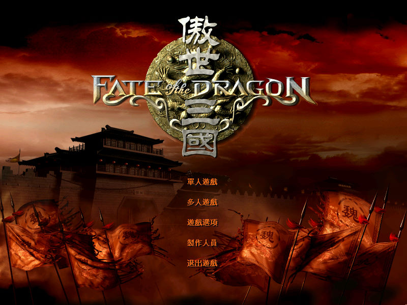
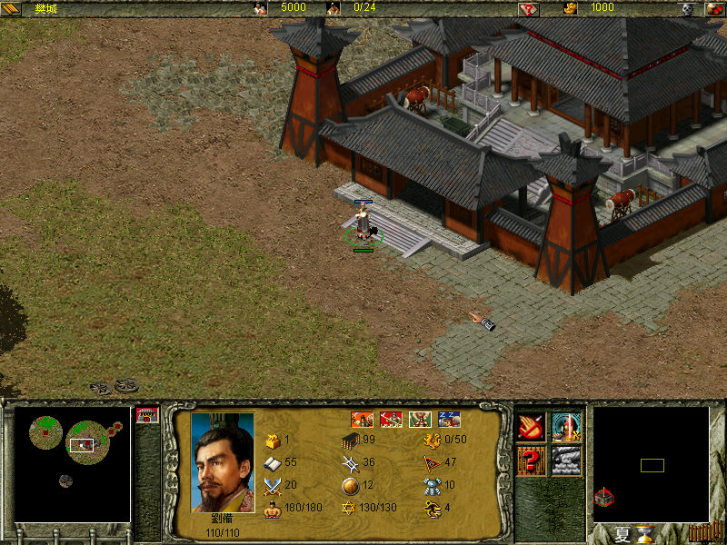
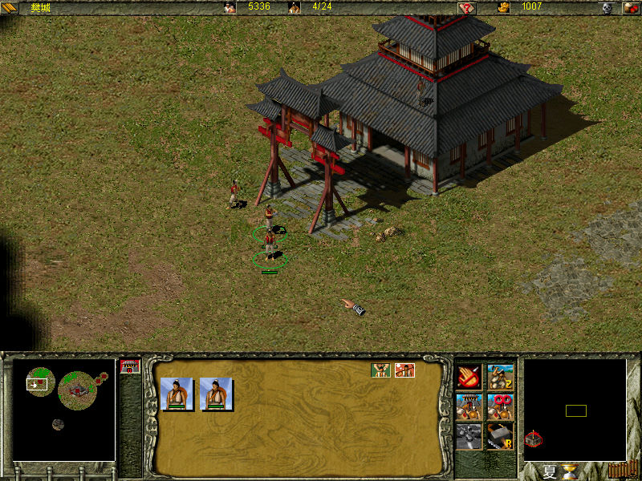

名稱：傲世三國 (Fate of the Dragon，繁中／簡中版)
簡介：北京目標軟件2000年出品的即時戰略遊戲，國外由Eidos代理發行。2001年再推出獨立
資料片「赤壁之戰／三分天下（Battle of Red Cliffs）」 [待補]。



保護：繁中主程式為光碟，資料片無保護
簡中舊主程式為光碟，舊資料片為光碟SafeDisc 2.40
簡中新主程式為光碟，新資料片無保護
備註：以下為各版本光碟的資訊：
1.繁中主程式1CD，執行檔2001/01/06，目錄2001/01/07，檔案版本1.2.0.2
繁中資料片1CD，執行檔2005/09/21，目錄2001/12/05，檔案版本1.0.0.3
2.簡中舊主程式2CD，執行檔2000/12/05，目錄2000/12/05，檔案版本1.0.0.1
簡中舊資料片1CD，執行檔2001/11/02，目錄2001/11/03，檔案版本1.0.0.1
3.簡中新主程式1CD，執行檔2001/05/31，目錄2001/12/13，檔案版本1.2.0.2（1.05版）
簡中新資料片1CD，執行檔2002/02/21，目錄2002/09/14，檔案版本1.0.0.1
主程式以簡中新版光碟較新，資料片以繁中版較新。
簡中新舊資料片只差在win.mp3以及保護方式不同，其餘均相同。新版win.mp3同繁中版。
其餘各版本的差異目前尚不清楚。
備註：簡中舊資料片，以及所有新版光碟均必須在繁中系統上安裝，然後在簡中系統上執行，
否則安裝顯示的文字、以及安裝目錄都會是亂碼。
備註：簡中版資料片VirtualBox需搭配DxWnd。
檔案：nocdx100_chs.rar = 1.00簡中資料片免光碟檔